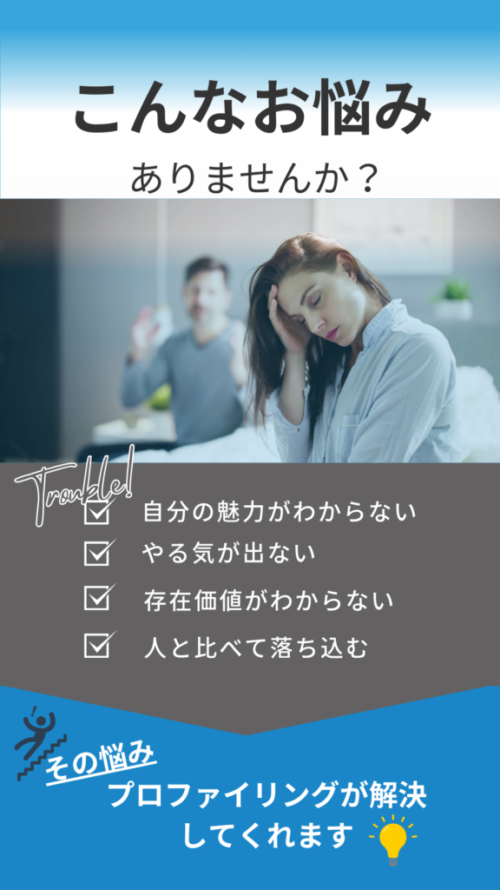
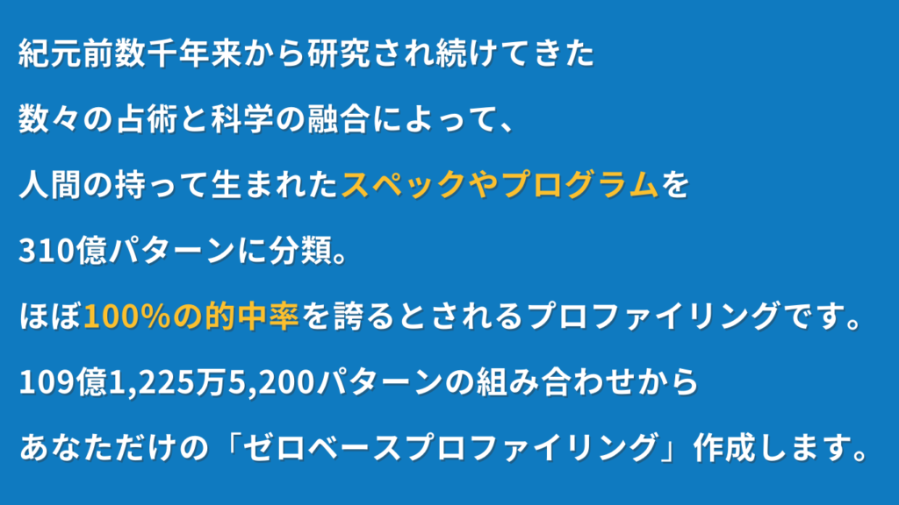
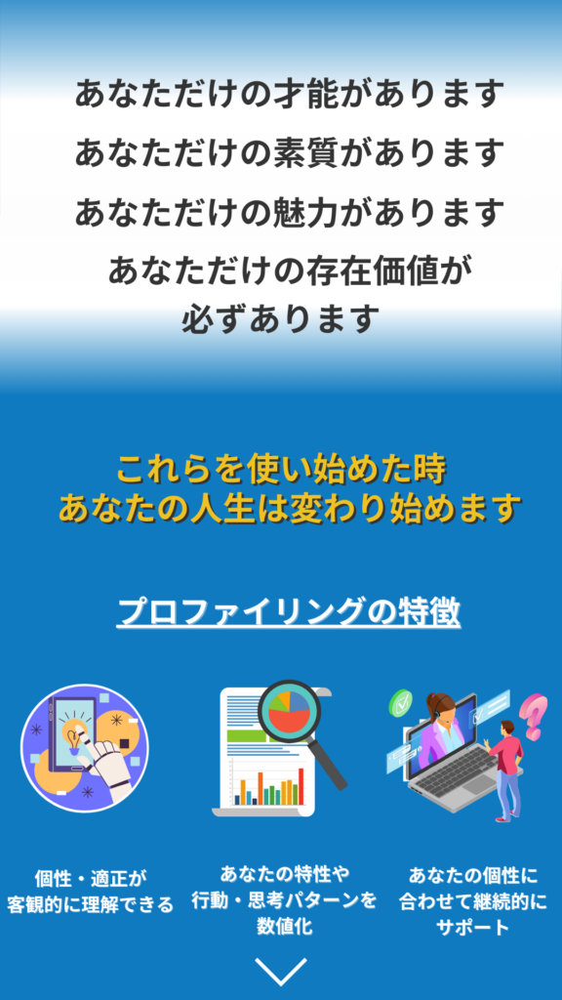
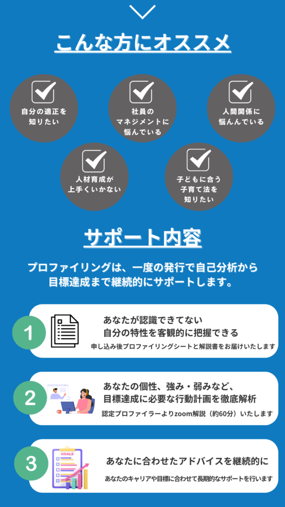
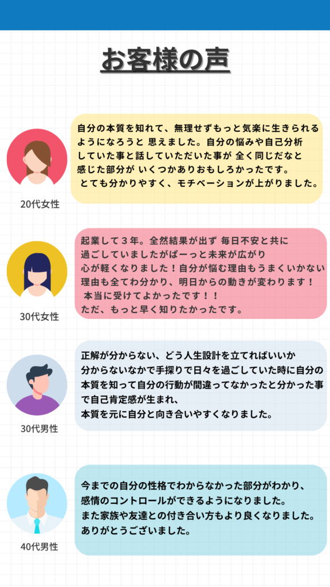
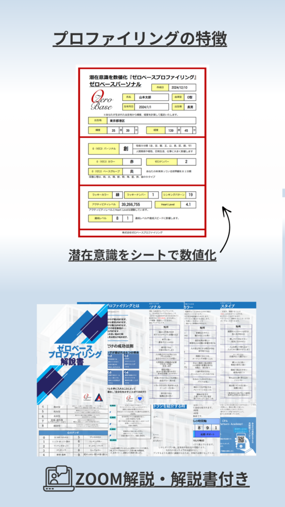
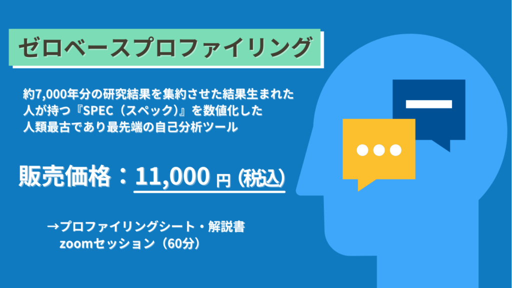
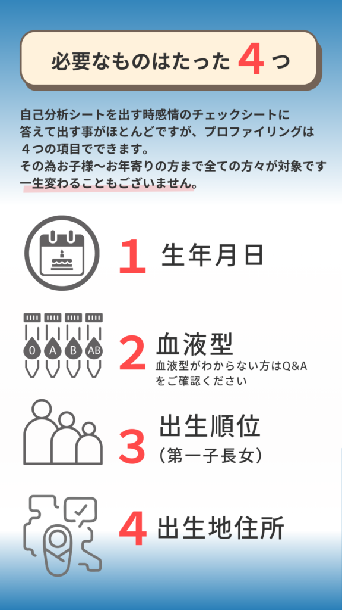

プロファイリングを受けると
こんな効果を得られます
- ご自身にとっての根源的な欲求（生きるモチベーション）
- 他者を惹きつける根源的な魅力
- 社会貢献の資質（使命・天職の方向性）
- ご自身の脳の持つ思考パターンや感情テンポ・リズム・等が明らかになります








あべ こうたろう
誰よりも真っ先に人を救う仕事をしたい一心で消防士になり人命救助に奔走。
後に救急救命士として述べ7,000人の苦しむ人を救うことに魂を捧げてきた。
誇りある任務である反面、救える命と救えない命の狭間に直面する。
心臓や脳といった”物理的な命”は救えても心という”想いの命”を救えていないことを痛感。
2024年心理学・コーチング・プロファイリングを学び、人が生まれながらにして持つ”個性”を引き出し、「世界で一番幸せ！」と言える大人を増やすコーチングを行う。
2026年より救急現場で培った瞬時の推論力と誰にでも伝わる言語化力をもとに、プロファイリングを駆使して日本社会のEQ教育の推進と組織人材育成を本格化。